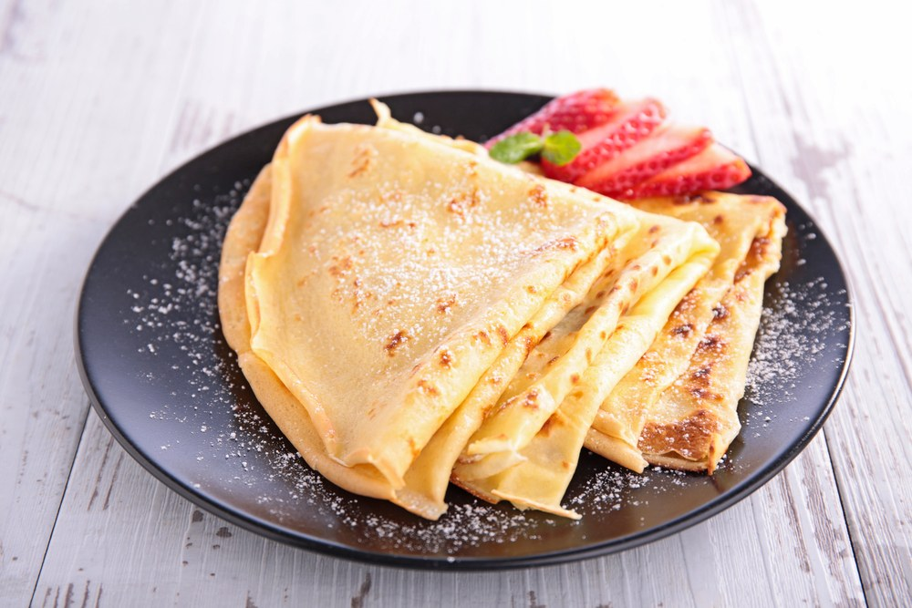

CREPE
Western Dish (France)

Takes 40 minutes
Makes 9 servings
MAIN DISH
Ingredients
- 1 cup all-purpose flour (spooned and leveled)
- 1 tablespoon sugar
- 1/4 teaspoon coarse salt
- 1 1/2 cups whole milk
- 4 large eggs
- 3 tablespoons unsalted butter, melted
Instruction
- 1. In a blender, combine flour, sugar, salt, milk, eggs, and butter.
- 2. Puree until mixture is smooth and bubbles form on top, about 30 seconds. Let batter sit at least 15 minutes at room temperature (or refrigerate in an airtight container, up to 1 day; whisk before using).
- 3. Heat a 12-inch nonstick skillet over medium. Lightly coat with butter. Add 1/3 cup batter and swirl to completely cover bottom of skillet. Cook until underside of crepe is golden brown, 2 to 3 minutes.
- 4. Loosen edge of crepe with a rubber spatula, then with your fingertips, quickly flip. Cook 1 minute more. Slide crepe out of skillet and repeat with remaining batter. (Coat pan with butter as needed.)
SOURCE : www.marthastewart.com
Add to Cart
want to try this recipe? order ingredients now!